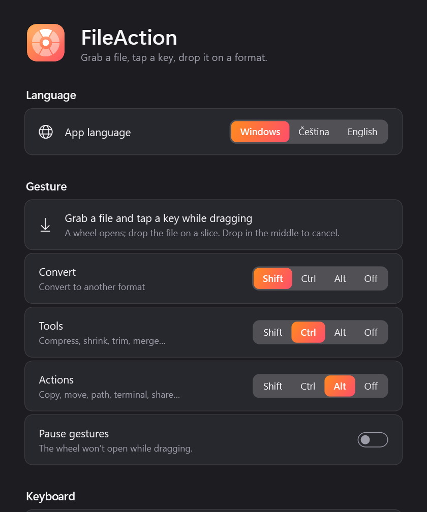
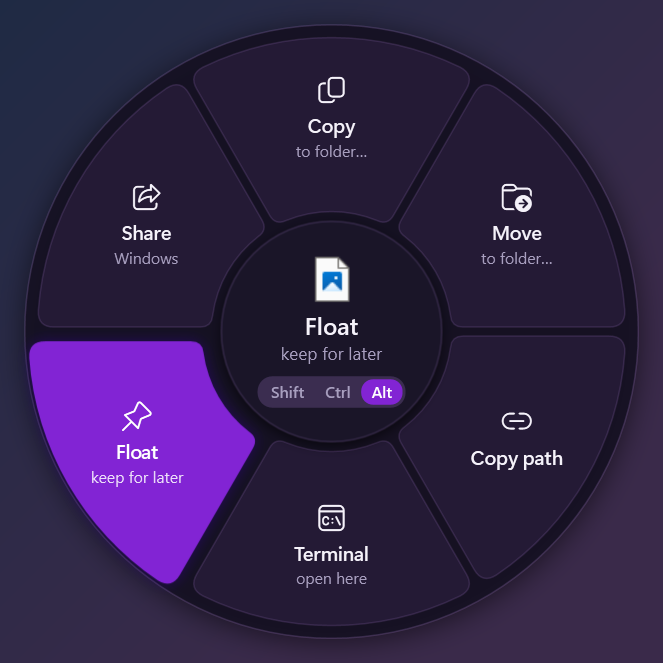
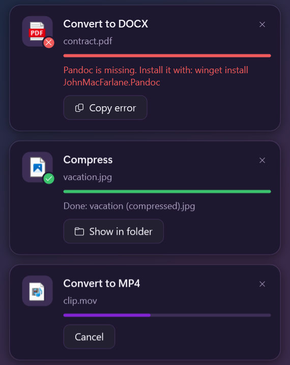

DropWheel
Grab a file, tap a key, drop it on the action you need.
Download DropWheelWindows 10/11 · 64-bit
Version 2.2.2
Screenshots



DropWheel
اسحب ملفًا، واضغط مفتاحًا، ثم ألقِه على الإجراء الذي تريده.
تحميل DropWheelويندوز 10/11 · 64 بت
الإصدار 2.2.2